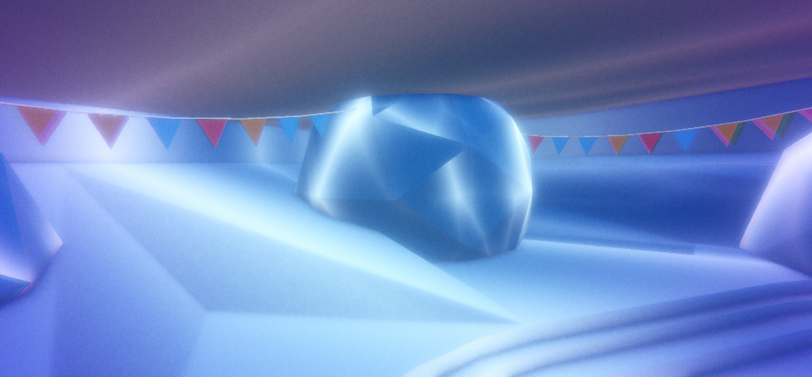
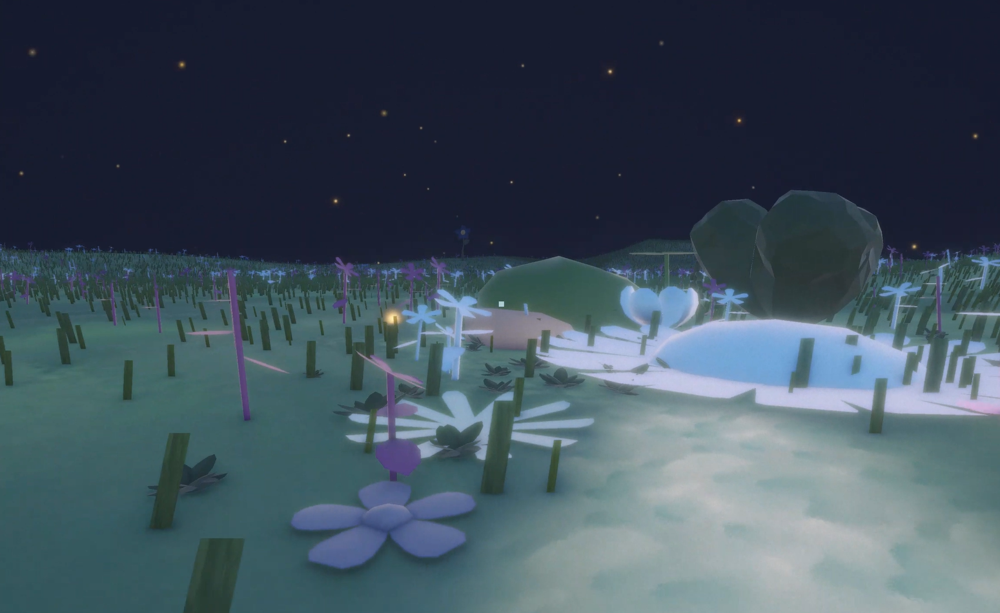
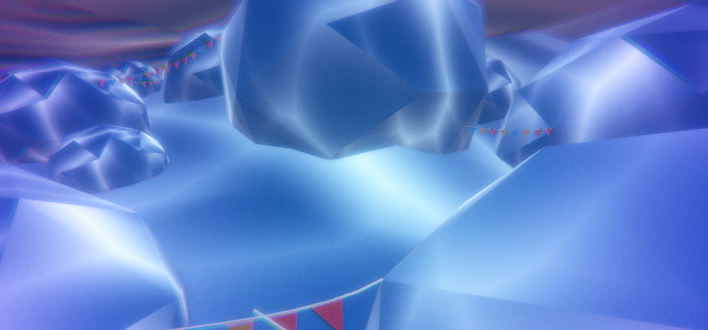

An immersive 3D environment depicting the transition from social misalignment to the peace of solitude.
Tech: Unity, Blender, BandLab, C#.
Overview
Elsewhere turns the personal experience of feeling out of place in social settings into an interactive 3D space. It begins in a familiar chaotic party environment and gradually guides the player into a quieter, reflective landscape through player-driven interaction. The world is built around withdrawal as a process rather than a single moment, with emotional progression communicated through movement, audio, visual distortion, spatial design, and interaction.


Social Submersion
Implied Social Space
The experience begins in a surreal party environment constructed
without visible people. Instead, objects such as cups, bottles,
stools, and decorations suggest an active social gathering. Their
scattered placement creates a sense of lingering presence and
disorder.

Restricted Movement & Spatial Confusion
Large bubbles obstruct the space and force indirect navigation through the space. Movement between these bubbles becomes unclear and intentionally restrictive, reinforcing a sense of overstimulation where even simple travel needs focus and adjustment.
